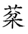

《苦闷的象征》广告[763]
这其实是一部文艺论，共分四章。现经我以照例的拙涩的文章译出，并无删节，也不至于很有误译的地方。印成一本，插图五幅，实价五角，在初出版两星期中，特价三角五分。但在此期内，暂不批发。北大新潮社代售。
鲁迅告白。
《未名丛刊》是什么，要怎样？（一）[764]
所谓《未名丛刊》者，并非无名丛书的意思，乃是还未想定名目，然而这就作为名字，不再去苦想他了。
这也并非学者们精选的宝书，凡国民都非看不可。只要有稿子，有印费，便即付印，想使萧索的读者，作者，译者，大家稍微感到一点热闹。内容自然是很庞杂的，因为希图在这庞杂中略见一致，所以又一括为相近的形式，而名之曰《未名丛刊》。
大志向是丝毫也没有。所愿的：无非（1）在自己，是希望那印成的从速卖完，可以收回钱来再印第二种；（2）对于读者，是希望看了之后，不至于以为太受欺骗了。
现在，除已经印成的一种[765]之外，就自己和别人的稿子中，还想陆续印行的是：
1.《苏俄的文艺论战》。俄国褚沙克等论文三篇。任国桢译。
2.《往星中》。俄国安特来夫作戏剧四幕。李霁野译。
3.《小约翰》。荷兰望蔼覃作神秘的写实的童话诗。鲁迅译。
白事[766]
本刊[767]虽说经我“校阅”，但历来仅于听讲的同学和熟识的友人们的作品，时有商酌之处，余者但就笔误或别种原因，间或改换一二字而已。现又觉此种举动，亦属多事，所以不再通读，亦不更负“校阅”全部的责任。特此声明！
三月二十二日，鲁迅。
鲁迅启事[768]
《民众文艺》稿件，有一部份经我看过，已在第十四期声明。现因自己事繁，无暇细读，并将一部份的“校阅”，亦已停止，自第十七期起，即不负任何责任。
四月十四日。
《莽原》出版预告[769]
本报[770]原有之《图画周刊》[771]（第五种），现在团体解散，不能继续出版，故另刊一种，是为《莽原》。闻其内容大概是思想及文艺之类，文字则或撰述，或翻译，或稗贩，或窃取，来日之事，无从预知。但总期率性而言，凭心立论，忠于现世，望彼将来云。由鲁迅先生编辑，于本星期五出版。以后每星期五随《京报》附送一张，即为《京报》第五种周刊。
对于北京女子师范大学风潮宣言[772]
溯本校不安之状，盖已半载有余，时有隐显，以至现在，其间亦未见学校当局有所反省，竭诚处理，使之消弭，迨五月七日校内讲演时，学生劝校长杨荫榆先生退席后，杨先生乃于饭馆召集教员若干燕饮，继即以评议部[773]名义，将学生自治会职员六人（文预科四人理预科一人国文系一人）揭示开除，由是全校然，有坚拒杨先生长校之事变，而杨先生亦遂遍送感言[774]，又驰书学生家属，其文甚繁，第观其已经公表者，则大概谆谆以品学二字立言，使不谙此事始末者见之，一若此次风潮，为校长整饬风纪之所致，然品性学业，皆有可征，六人学业，俱非不良，至于品性一端，平素尤绝无惩戒记过之迹，以此与开除并论，而又若离若合，殊有混淆黑白之嫌，况六人俱为自治会职员，倘非长才，众人何由公举，不满于校长者倘非公意，则开除之后，全校何至然？所罚果当其罪，则本系之两主任[775]何至事前并不与闻，继遂相率引退，可知公论尚在人心，曲直早经显见，偏私谬戾之举，究非空言曲说所能掩饰也，同人忝为教员，因知大概，义难默尔，敢布区区，惟关心教育者察焉。
马裕藻，沈尹默，周树人，李泰棻，钱玄同，
沈兼士，[776]周作人。
编者附白[777]
《莽原》所要讨论的，其实并不重在这一类问题。前回登那两篇文章[778]的缘故，倒在无处可登，所以偏要给他登出。但因此又不得不登了相关的陈先生的信[779]，作一个结束。这回的两篇，是作者见了《现代评论》的答复[780]，而未见《莽原》的短信的时候所做的，从上海寄到北京，却又在陈先生的信已经发表之后了，但其实还是未结束前的话。因此，我要请章周二先生[781]原谅：我便于词句间换了几字，并且将“附白”除去了。大概二位看到短信之后，便不至于以我为太专断的罢。
六月一日。
《敏捷的译者》附记[782]
鲁迅附记：微吉罗就是Virgilius，诃累错是Horatius。[783]
“吾家”彦弟[784]从Esperanto[785]译出，所以煞尾的音和原文两样，特为声明，以备查字典者的参考。
正误[786]
第十期《莽原》上错字颇多，实在对不起读者。现在择较为重要的作一点正误，将错的写在前面，改正的放在括弧内，以省纸面。不过稿子都已不在手头，所以所改正的也许与原稿偶有不合；这又是对不起作者的。至于可以意会的错字和标点符号只好省略了。第十一期上也有一点，就顺便附在后面。 七月三日，编辑者。
第十期
《弦上》：
诗了 （诗人了）
为聪明人将要 （为聪明人，聪明人将要）
基旁 （道旁）
《铁栅之外》：
生观 （人生观）
像是 （就是）
剌刃 （刺刀）
什么？感化 （什么感化？）
窥了了 （窥见了）
完得 （觉得）
即将 （即时）
集！ （集合）
《长夜》：
猪蓄 （潴蓄）
《死女人的秘密》：
那过 （那边）
奶干草 （干草）
狂飚过是 （狂飚过去）
那么爱道 （那么爱过）
那些住 （那些信）
正老家庭的书棹单，出的 （正如老家庭的书棹里拿出的）
如带一封 （如一封）
术儒 （木偶）
《去年六月的闲话》：
六日，日记 （六日的日记）
《补白》：
早怯 （卑怯）
有战 （有箭）
很牙 （狼牙）
打人脑袋 （打人脑袋的）
不觉事 （不觉得）
《正误》：
刃剚 （剚刃）
第十一期
《内幕之一部》：
中人的 （中国人的）
枪死鬼 （抢死鬼）
《短信》：
近于流 （近于下流）
下为 （为）
为崇 （尊崇）
《未名丛刊》是什么，要怎样？（二）[787]
所谓《未名丛刊》者，并非无名丛书之意，乃是还未想定名目，然而这就作为名字，不再去苦想它了。
这也并非学者们精选的宝书，凡国民都非看不可。只要是有稿子，有印费，便即付印，想使萧索的读者，作者，译者，大家稍微感到一点热闹。内容自然是很庞杂的，因为希图在这庞杂中略见一致，所以又一括为相近的形式，而名之曰《未名丛刊》。
大志向是丝毫也没有。所愿的：无非（1）在自己，是希望那印成的从速卖完，可以收回钱来再印第二种；（2）对于读者，是希望看了之后，不至于以为太受欺骗了。
以上是一九二四年十二月间的话。[788]
现在将这分为两部分了：这里专收译本；还有集印创作的，叫作《乌合丛书》。
创作，谁都知道可尊，但还有人只能翻译，或者偏爱翻译，而且深信有些翻译竟胜于有些创作，所以仍是悍然翻译，而印在这《未名丛刊》中。
亲自试过的，会知道翻译有时比创作还麻烦，即此小工作，也不敢自说一定下得去；然而译者总尽自己的力和心，如果终于下不去了，那大概是无能之故，并非敢于骗版税。
版税现在还不能养活一个著作者，而况是收在《未名丛刊》中。因为这书的纸墨装订是好的，印的本数是少的，而定价是不贵的。
但为难的是缺本钱；所希望的只在爱护本刊者以现钱直接来购买，那么，《未名丛刊》就续出不尽了，我们就感谢不尽了。
已印成和未印成的书目：
1.《苦闷的象征》。日本厨川白村作；鲁迅译。价五角。在再版。
2.《苏俄的文艺论战》。俄国褚沙克等作；任国桢译。价三角半。
——二种北新书局发行
3.《出了象牙之塔》。实价七角 不许翻印
——北京东城沙滩新开路第五号
未名社刊物经售处发行
4.《往星中》。俄国安特来夫作戏剧；李霁野译。
5.《穷人》。俄国陀思妥夫斯奇作小说；韦丛芜译。
6.《小约翰》。荷兰望蔼覃作象征的写实的童话诗。鲁迅译。
7.《十二个》。俄国勃洛克作长诗；胡译。
——以上四种现正在校印
本社刊物经售处发行
注 释
[763] 本篇最初刊于1925年3月10日《京报副刊》。
《苦闷的象征》，日本厨川白村（1880—1923）著。鲁迅译本于1924年12月出版，为《未名丛刊》之一，由北京新潮社代售。后又改由北新书局出版。
[764] 本篇最初刊于1925年3月未名社出版的《苦闷的象征》一书的封底，题下署名鲁迅。
[765] 指《苦闷的象征》。
[766] 本篇最初刊于1925年3月24日北京《民众文艺周刊》第十四期。
[767] 指《民众文艺周刊》。1924年12月9日在北京创刊，《京报》的附刊之一，荆有麟、胡崇轩（也频）等编辑。第十六期（1925年4月7日）起改名《民众文艺》，第二十五期（1925年6月23日）改名《民众周刊》，第三十一期（1925年8月4日）改名《民众》，1925年11月出至第四十七期停刊。
[768] 本篇最初刊于1925年4月17日《京报副刊》。
[769] 本篇最初刊于1925年4月21日《京报》广告栏。
1925年4月20日，《京报》刊登了一则关于《莽原》的广告：“思想界的一个重要消息：如何改造青年的思想？请自本星期五起快读鲁迅先生主撰的《□□》周刊，详情明日宣布。本社特白。”鲁迅认为这一广告写得“夸大可笑”（《两地书·一五》），所以重拟了这个出版预告。
[770] 指《京报》，邵飘萍（振青）创办的具有进步色彩的报纸，1918年10月创刊于北京，1926年4月被奉系军阀张作霖查封。
[771] 《图画周刊》 《京报》附刊之一，1924年12月创刊，每星期五发行，至1925年4月，共出十一期。该刊由《图画世界》社编辑，冯武越负责。
[772] 本篇最初发表于1925年5月27日《京报》。
许广平在她所保存的这一宣言的铅印件旁写有附注：“鲁迅拟稿，针对杨荫榆的《感言》仗义执言，并邀请马裕藻先生转请其他先生连名的宣言。”
[773] 评议部 即评议会。根据《国立北京女子师范大学组织大纲》，学校的领导机构为评议会，由校长、教务主任、总务主任及公选出的十名教授共同组成，由校长主持。
[774] 指杨荫榆的《对于暴烈学生之感言》，1925年5月20日《晨报》以《“教育之前途棘矣！”杨荫榆之宣言》为题，曾予刊载。
[775] 指女师大国文系主任马裕藻和代主任黎锦熙。
[776] 马裕藻（1878—1945） 浙江鄞县人，当时是北京大学国文系教授兼北京女子师范大学讲师和国文系主任。沈尹默（1883—1971），浙江吴兴人，当时是北京大学国文系教授兼女师大国文系讲师。李泰

（1890—1972），河北阳原人，当时是北京大学教授兼女师大史地系主任。沈兼士（1885—1947），沈尹默之弟，当时是北京大学研究所国学门主任兼女师大国文系讲师。[777] 本篇最初发表于1925年6月5日北京《莽原》周刊第七期，是对于该刊登载章锡琛《与陈百年教授谈梦》、周建人《再答陈百年先生论一夫多妻》两文的说明。未署名。
1925年1月，章锡琛、周建人在《妇女杂志》第十一卷第一号发表关于性道德问题的文章，陈百年即在《现代评论》上加以非难。而章、周投寄《现代评论》的答辩却受到该刊的压制。因此鲁迅在《莽原》第四、六、七期上，为讨论这一问题提供篇幅。
[778] 指《莽原》周刊第四期（1925年5月15日）刊载的周建人《答〈一夫多妻的新护符〉》和章锡琛《驳陈百年教授〈一夫多妻的新护符〉》二文。按《现代评论》第十四期（1925年3月14日）刊登陈百年的《一夫多妻的新护符》对章、周提出非难以后，周建人和章锡琛曾分别写了《恋爱自由与一夫多妻》和《新性道德与多妻》两篇答辩文章寄《现代评论》，但该刊直到第二十期仍不予发表。于是他们又分别撰写此二文投寄《莽原》。
[779] 陈先生的信 指《莽原》周刊第六期（1925年5月29日）刊载的陈百年《给周章二先生的一封短信》，信中为《现代评论》迟迟不发表周、章文章辩解，并提出停止论战。陈百年（1887—1983），名大齐，字百年，浙江海盐人，心理学家。当时是北京大学教授。
[780] 《现代评论》的答复 指《现代评论》第二十二期（1925年5月9日）刊载的陈百年《答章周二先生论一夫多妻》一文。在这期最末的“通讯”栏中，同时摘登了周、章二人写的《恋爱自由与一夫多妻》和《新性道德与多妻》。
[781] 章周二先生 指章锡琛、周建人。章锡琛（1889—1969），字雪村，浙江绍兴人。当时任商务印书馆《妇女杂志》主编。周建人（1888—1984），字乔峰，鲁迅的三弟，生物学家。当时是商务印书馆编辑。
[782] 本篇最初发表于1925年6月12日《莽原》周刊第八期，附在鲁彦翻译的《敏捷的译者》之后。
[783] 微吉罗（前70—前19） 世界语Virgilo的音译，英文写作Vergilius（音译维尔吉利乌斯）；诃累错（前65—前8），世界语Horatio的音译，英文写作Horatius（音译贺拉替乌斯）。二人皆为古罗马诗人。
[784] “吾家”彦弟 指王鲁彦（1901—1944），原名王衡，笔名鲁彦，浙江镇海人，小说家。《莽原》周刊第七期（1925年6月5日）在发表鲁彦的译文《考试之前》时，文后附有译者写给鲁迅的一段话，前以“大哥鲁迅”开头，末以“老弟鲁彦”落款。所以鲁迅在这里有“‘吾家’彦弟”的回应。
[785] Esperanto 波兰柴门霍夫创造的一种世界语。
[786] 本篇最初刊于1925年7月10日《莽原》周刊第十二期。
[787] 本篇最初刊于1925年12月未名社初版的《出了象牙之塔》版权页后。未署名。
[788] 以上三段话参看本卷468页同题广告（一）。